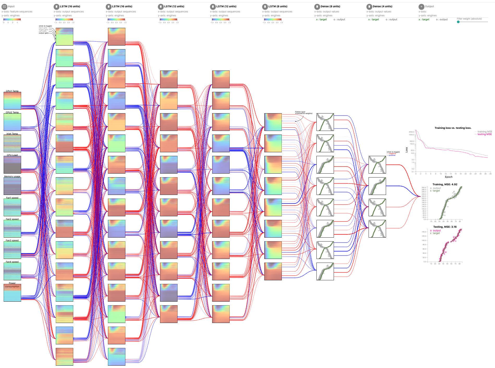
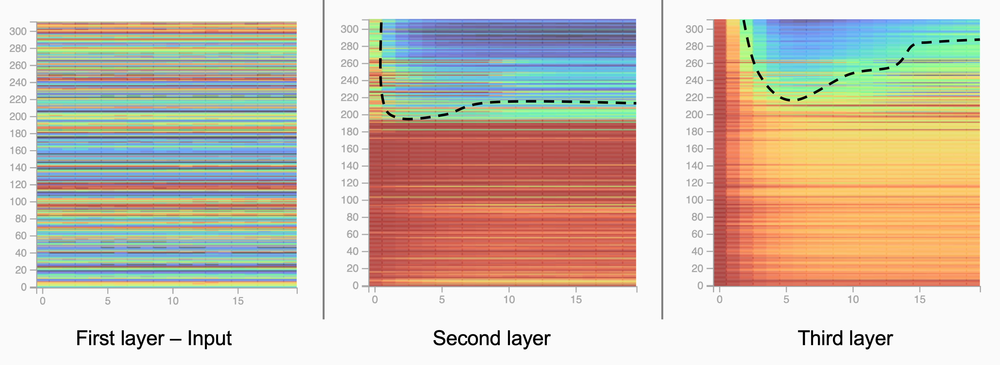
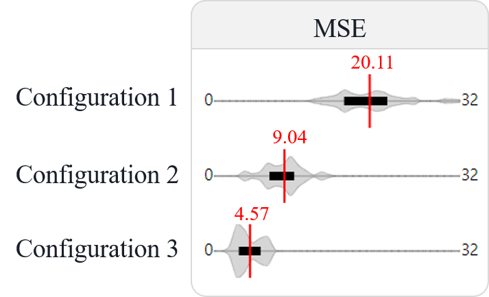
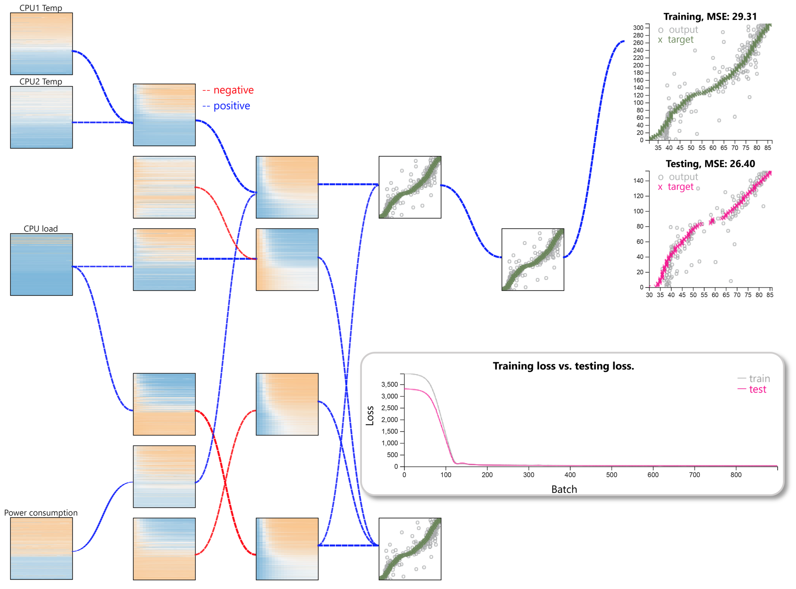
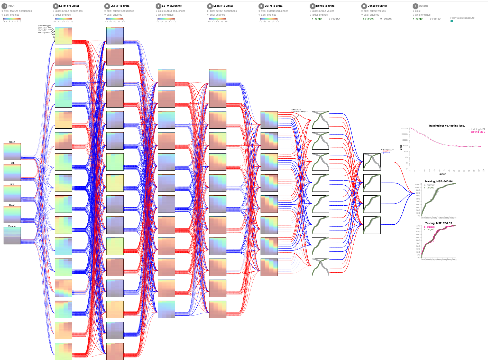
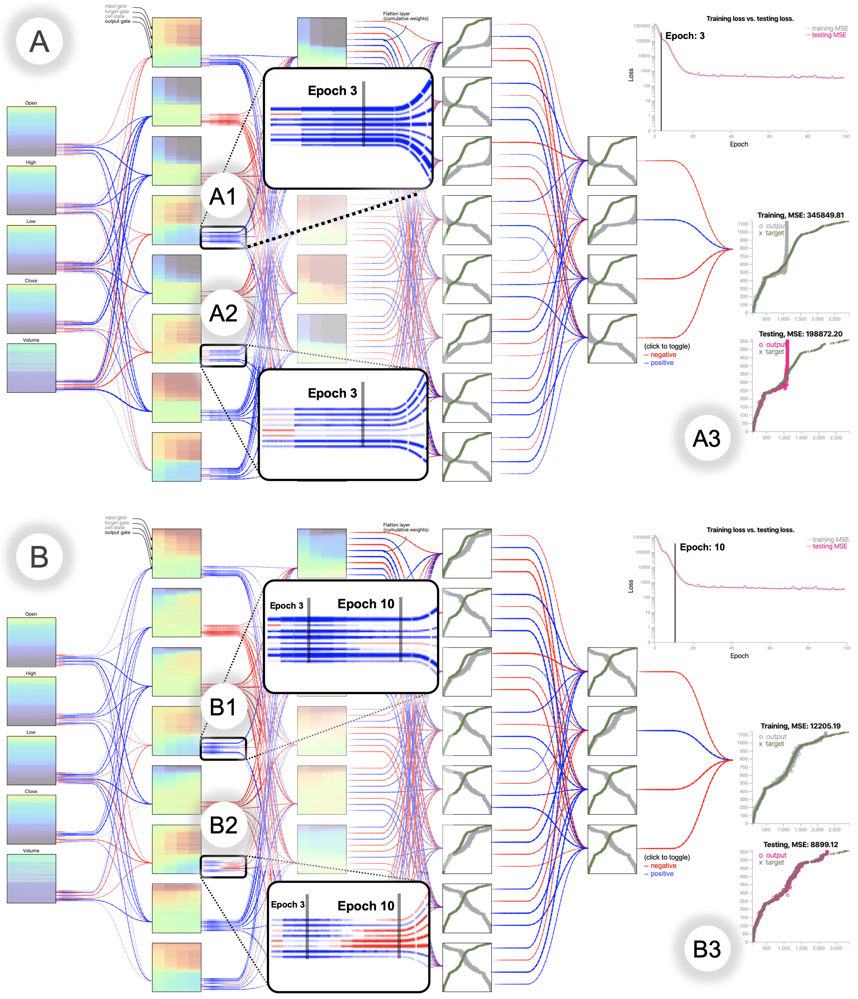
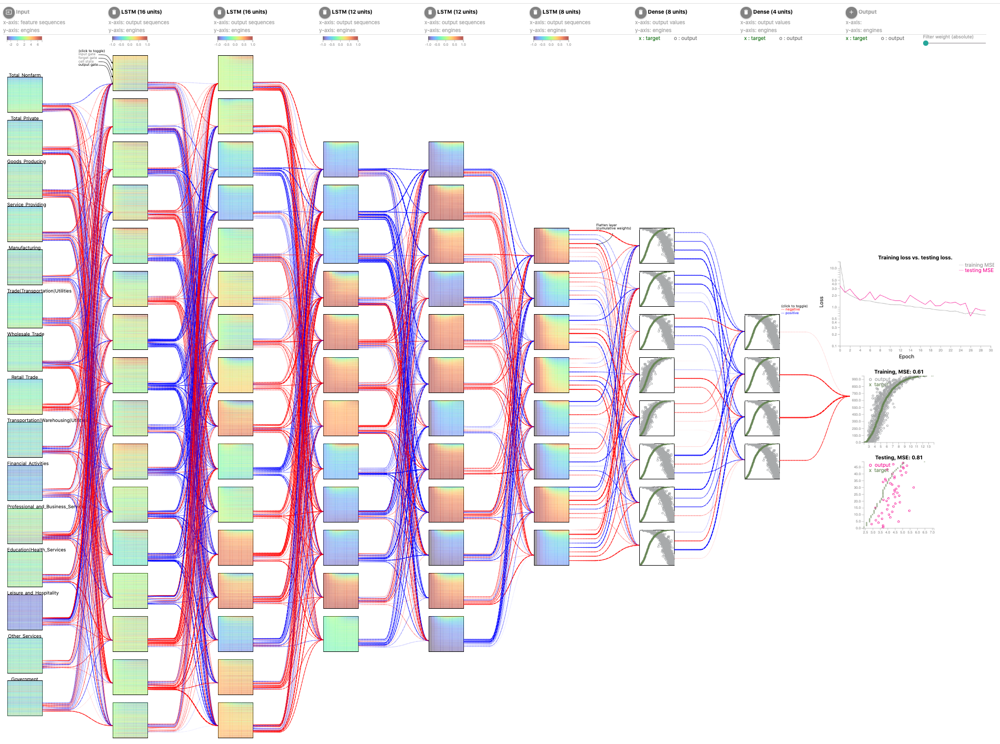

High Performance Computing Data: HPC health prediction
Configuration: L16-L16-L12-L12-L8-D8-D4 (L: LSTM, D: Dense)

1) Temporal dependency
Consider the first three layers in the structure above:
- • The first layer is input, there is no pattern we can observed.
- • The second layer shows somewhat a pattern learned in the upper part of the node.
- • The third layer presents more clearly the temporal dependency as we can observe a diagonal pattern.
2) Trade off between accuracy and training time
We experimented three settings:
- • Configuration 1 (8-4-2) has two LSTM layers -- with 8 and 4 nodes respectively, and only one Dense layer containing two nodes.
- • Configuration 2 (8-8-8-4) has two LSTM layers -- eight nodes each, and two Dense layers -- with 8 and 4 nodes respectively.
- • We add another 16-node LSTM layer into Configuration 1 to form a more complex Configuration 3 (16-8-8-8-4).
3) Filtering weights

Filtering weights helps to focus on the raw and extracted features with respect to significant
contributions to the final prediction result. The above figure shows the model of (L8 - L8 -
D8 - D4) with the output gates weight filter threshold set to 0.7.
It shows that the predicted CPU temperature strongly depends on other CPU temperatures, the CPU
load, and the power consumption.
Furthermore, these network contribution also suggest another exploration to improve training
time or prediction performance, or could be both.
S&P500 Stock Data: Stock price prediction
Configuration: L16-L16-L12-L12-L8-D8-D4 (L: LSTM, D: Dense)

The
dataset covers stock records
for five weekdays each week,
in the period of 39 years,
from 1980 to 2019. Each
record contains the timestamp, stock price at “Open”,
“High”, “Low”, “Close”, and
“Volume” of the stock that
day. During the training and
testing process, we utilize
the attributes of the stock
price on Monday, Tuesday,
Wednesday, and Thursday to
predict Close price for Friday.
DeepViz model for the S&P500 stock market price dataset through two system snapshots: At the 3rd
epoch and at the 10th epoch:

1) Evolution of weights
- • Panel B1: The thickness of lines decreases significantly over time, indicating that there is a major reduction in the magnitude of these parameters reduces during the training process, hence less contribution of this node to the next output.
- • Panel A2: There are several negative weights switch into positive right after the first epoch, resulted in an all-positive set of parameters in later epochs, hence the positive contribution to the following layer.
- • However in panel B2: Major of the parameters have remarkable changes: The originally thick lines decrease their width, the originally thin, positive lines switch into negative and adjust to the larger magnitude.
2) Learning process
- • Panel A3: In the early stage of training process (epoch 3),
the scatterplots for training MSE and testing MSE both contain a vertical formation of outputs.
This can be explained by the activation function ReLU: Negative input will result in zero output, as can be seen in the first, third and fourth nodes in the last Dense layer right before the final output. At this stage, the learning process just started and parameters are not tuned properly. - • Panel B3: As we move on to epoch 10, the outputs are now align with the target in better shape. Notice that at the last Dense layer, the only one node has positive weight is the second one from top down, with the outputs align in similar direction as target, whereas the other three nodes possess opposite orientation to the target, hence their negative weights.
US Employment Data: Unemployment rate prediction
Configuration: L16-L16-L12-L12-L8-D8-D4 (L: LSTM, D: Dense)

US Employment Data: Unemployment rate prediction
Configuration: L64-L64-L48-L32-L16-D16-D8-D4 (L: LSTM, D: Dense)